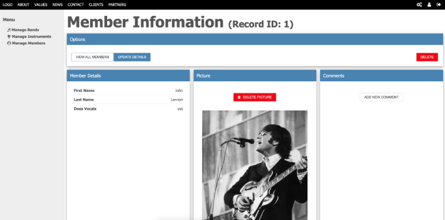

Users of the Trongate Desktop App will no doubt be aware that Trongate has the ability to generate entire admin templates, complete with full authentication, automatic API generation as well as full code generation.

A complete and comprehensive description of the Trongate Desktop App is beyond the scope of this documentation. However, there are a few points that may be worthy of a quick mention:
NO THIRD PARTY LIBRARIES
The Trongate Desktop App, and the admin panels that it generates, do not use any third party libraries. There is but one exception to this. If you decide to use icons for your admin panel side navigation then the admin panel will use 'font-awesome' icons.
By default, the Trongate Desktop App produces admin panels that have 'green' as the main admin panel colour. However, other colours are available and have been loaded into the framework. The full set of theme colours that are available are:
To change the default colour for your admin theme, open config/themes.php and change the name of the 'themes' directory so that it contains the name of the colour that you'd like to use. For example, here's how to switch to a 'red' theme:
<?php
$admin_theme = [
"dir" => "default_admin/red",
"template" => "admin.php"
];
$themes["admin"] = $admin_theme;
define("THEMES", $themes);
In the not too distant future, you'll be able to choose from a variety of different themes for your Trongate web app and download beautiful themes at the click of a button. Because Trongate's admin panel doesn't use any classes (with the single exception of the 'alt' class for alternative buttons), it means that designers have a gloriously blank canvas upon which they can produce beautiful custom designs for Trongate Apps.
The ultimate goal is to end up with a platform that's similar to WrapBootstrap (which is a great site!) - but to have all the templates tailored for Trongate web apps, with one-click installation as standard.
Keep an eye on this YouTube channel for upcoming free tutorials on how to create your own professional templates.